Aluno: Samuel Willia Silva Almeida
Universidade: Universidade Estadual do Ceará
Disciplina: Processamento de Imagens
Data: 9 de maio de 2026
Este relatório documenta a implementação da Atividade 2 da disciplina de Processamento de Imagens, cobrindo duas frentes complementares: a aplicação de 11 filtros no domínio espacial por convolução manual e a filtragem e compressão de imagens no domínio da frequência com uso de FFT bidimensional. A implementação foi verificada antes da redação: os scripts q1.py e questao2.py são de fato os responsáveis pela geração das imagens de saída e dos respectivos arquivos JSON de métricas.
O objetivo da atividade é consolidar, na prática, os conceitos de transformação no domínio espacial e no domínio da frequência. No primeiro caso, a imagem é manipulada diretamente por kernels de filtragem aplicados por convolução. No segundo, a imagem é convertida para o domínio espectral, mascarada com filtros frequenciais e reconstruída por transformada inversa. Além da filtragem, a Questão 2 também inclui compressão por limiar de magnitude no espectro e análise por histogramas.
Antes de montar o relatório, foi confirmada a autoria funcional das saídas:
| Script | Função principal | Saídas geradas |
|---|---|---|
| q1.py | Convolução manual com 11 kernels | q1_h1.png até q1_h11.png e resultados_q1.json |
| questao2.py | FFT, máscaras, reconstrução, compressão e histogramas | Subpastas 00_fft/, 01_masks/, 02_filtradas/, 03_compressao/, 04_histogramas/ e resultados_questao2.json |
O script da Questão 1 define explicitamente os 11 filtros, executa a convolução pixel a pixel e salva cada resultado. O script da Questão 2 realiza leitura em escala de cinza, FFT, centralização do espectro, geração de máscaras circulares, filtragem frequencial, reconstrução por IFFT, compressão por percentil e geração de histogramas. Portanto, os dois arquivos indicados pelo usuário são realmente os geradores dos resultados finais.
As imagens utilizadas devem estar relacionadas ao tema do trabalho final e podem ser definidas conforme a proposta do aluno. O relatório foi preparado para aceitar qualquer imagem compatível com os scripts, desde que o caminho seja informado corretamente na execução.
Figura 1: Imagem original utilizada para aplicação dos filtros no domínio espacial.
atividade2/imageq1.png--input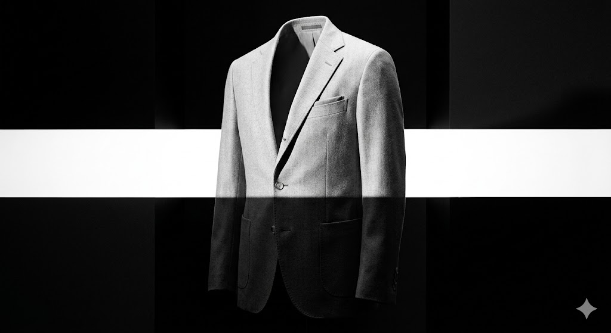
Figura 2: Imagem original utilizada para processamento no domínio da frequência.
atividade2/image2.png--inputA implementação da Questão 1 está em q1.py. O script carrega a imagem em escala de cinza, converte para numpy.float32, aplica padding com reflexão e executa convolução manual com 11 kernels distintos. O resultado de cada filtro é reescalado para o intervalo de 0 a 255 e salvo como PNG.
Os filtros implementados são:
| Filtro | Nome | Efeito principal |
|---|---|---|
| h1 | Média 3x3 | Suavização leve |
| h2 | Gaussiano 5x5 | Desfoque mais natural |
| h3 | Sobel X | Realce de bordas verticais |
| h4 | Sobel Y | Realce de bordas horizontais |
| h5 | Prewitt X | Bordas verticais |
| h6 | Prewitt Y | Bordas horizontais |
| h7 | Laplaciano | Bordas em todas as direções |
| h8 | Sharpening | Realce de nitidez |
| h9 | Emboss | Efeito de relevo |
| h10 | Média 5x5 | Suavização mais forte |
| h11 | Unsharp mask | Realce com preservação estrutural |
#!/usr/bin/env python3
"""
Aplica 11 filtros (h1..h11) por convolução manual em uma imagem monocromática.
Regras:
- Não usar funções prontas de filtragem (ex: OpenCV `filter2D`, `GaussianBlur`).
- Permitido usar `Pillow` para I/O e `numpy` para operações de array.
Saídas:
- Imagens geradas salvas em `atividade2/saidas/saidas_questao2` como `q1_h1.png` ... `q1_h11.png`.
- `resultados_q1.json` com estatísticas por filtro.
"""
import os
import sys
import json
from argparse import ArgumentParser
from math import exp
import numpy as np
from PIL import Image
def ensure_outdir(path):
os.makedirs(path, exist_ok=True)
def load_image_grayscale(path):
img = Image.open(path).convert('L')
return np.array(img, dtype=np.float32)
def save_image_uint8(arr, path):
arr_u8 = np.clip(arr, 0, 255).astype(np.uint8)
Image.fromarray(arr_u8).save(path)
def pad_image(img, pad_h, pad_w, mode='reflect'):
if mode == 'zero':
padded = np.zeros((img.shape[0] + 2 * pad_h, img.shape[1] + 2 * pad_w), dtype=img.dtype)
padded[pad_h:pad_h+img.shape[0], pad_w:pad_w+img.shape[1]] = img
return padded
elif mode == 'reflect':
return np.pad(img, ((pad_h, pad_h), (pad_w, pad_w)), mode='reflect')
else:
raise ValueError('Unknown pad mode')
def convolve2d(image, kernel, pad_mode='reflect'):
kh, kw = kernel.shape
ih, iw = image.shape
ph, pw = kh // 2, kw // 2
padded = pad_image(image, ph, pw, mode=pad_mode)
out = np.zeros_like(image, dtype=np.float32)
k = np.flip(np.flip(kernel, axis=0), axis=1)
for y in range(ih):
for x in range(iw):
region = padded[y:y+kh, x:x+kw]
out[y, x] = np.sum(region * k)
return out
def make_gaussian_kernel(size, sigma):
ax = np.arange(-size // 2 + 1., size // 2 + 1.)
xx, yy = np.meshgrid(ax, ax)
kernel = np.exp(-(xx**2 + yy**2) / (2. * sigma**2))
kernel = kernel / np.sum(kernel)
return kernel
def normalize_kernel(kernel):
s = np.sum(kernel)
if s != 0:
return kernel / s
return kernel
def main():
p = ArgumentParser()
p.add_argument('--input', '-i', required=False, help='Caminho da imagem de entrada (qualquer formato). Se omitido, usa atividade2/imageq1.png')
p.add_argument('--outdir', '-o', default='atividade2/saidas/saidas_questao2', help='Pasta de saída')
args = p.parse_args()
inp = args.input
if not inp:
default_img = os.path.join(os.path.dirname(__file__), 'imageq1.png')
if os.path.exists(default_img):
inp = default_img
print('Nenhum input fornecido — usando imagem padrão:', inp)
else:
p.error('Nenhum arquivo de entrada fornecido e imagem padrão não encontrada: ' + default_img)
outdir = args.outdir
ensure_outdir(outdir)
img = load_image_grayscale(inp)
kernels = {}
kernels['h1'] = np.ones((3,3), dtype=np.float32) / 9.0
kernels['h2'] = make_gaussian_kernel(5, sigma=1.0)
kernels['h3'] = np.array([[-1,0,1],[-2,0,2],[-1,0,1]], dtype=np.float32)
kernels['h4'] = np.array([[-1,-2,-1],[0,0,0],[1,2,1]], dtype=np.float32)
kernels['h5'] = np.array([[-1,0,1],[-1,0,1],[-1,0,1]], dtype=np.float32)
kernels['h6'] = np.array([[-1,-1,-1],[0,0,0],[1,1,1]], dtype=np.float32)
kernels['h7'] = np.array([[0,-1,0],[-1,4,-1],[0,-1,0]], dtype=np.float32)
kernels['h8'] = np.array([[0,-1,0],[-1,5,-1],[0,-1,0]], dtype=np.float32)
kernels['h9'] = np.array([[-2,-1,0],[-1,1,1],[0,1,2]], dtype=np.float32)
kernels['h10'] = np.ones((5,5), dtype=np.float32) / 25.0
gauss5 = make_gaussian_kernel(5, sigma=1.0)
delta = np.zeros((5,5), dtype=np.float32)
delta[2,2] = 1.0
amount = 1.0
kernels['h11'] = delta + amount*(delta - gauss5)
results = {}
for i, (name, k) in enumerate(kernels.items(), start=1):
print(f'Aplicando {name}...')
out = convolve2d(img, k, pad_mode='reflect')
minv, maxv = out.min(), out.max()
if maxv - minv > 0:
out_vis = (out - minv) * (255.0 / (maxv - minv))
else:
out_vis = np.clip(out, 0, 255)
fname = os.path.join(outdir, f'q1_{name}.png')
save_image_uint8(out_vis, fname)
results[name] = {
'kernel_shape': k.shape,
'kernel': k.tolist(),
'min': float(minv),
'max': float(maxv),
'mean': float(np.mean(out)),
'saved_image': fname
}
json_path = os.path.join(outdir, 'resultados_q1.json')
with open(json_path, 'w', encoding='utf-8') as f:
json.dump(results, f, indent=2, ensure_ascii=False)
print('Concluído. Resultados salvos em', outdir)
if __name__ == '__main__':
main()
Os resultados são salvos em atividade2/saidas/saidas_questao2/ como q1_h1.png até q1_h11.png. Cada imagem corresponde a um efeito específico. A análise visual deve observar suavização nos filtros de média e Gaussiano, realce de bordas nos detectores Sobel, Prewitt e Laplaciano, e aumento de nitidez nos filtros de sharpening e unsharp mask.
| Média 3x3 | Gaussiano 5x5 | Média 5x5 |
|---|---|---|
Figura 3: Filtros de suavização aplicados à imagem original.
| Sobel X | Sobel Y | Prewitt X | Prewitt Y |
|---|---|---|---|
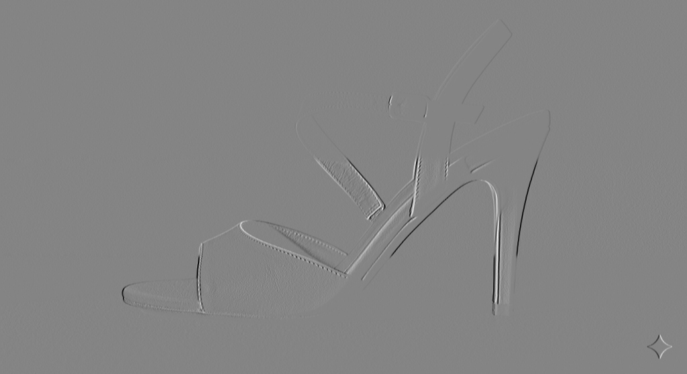 |
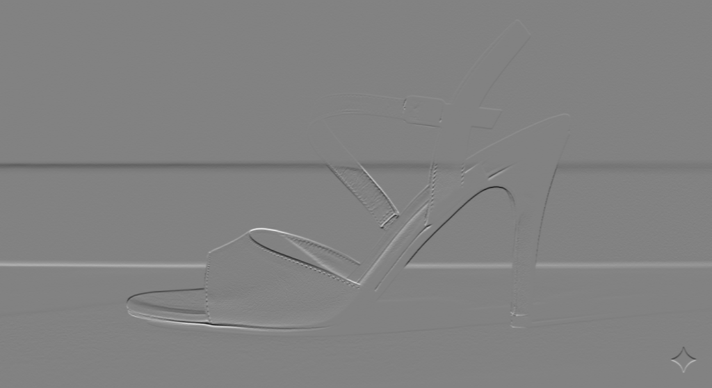 |
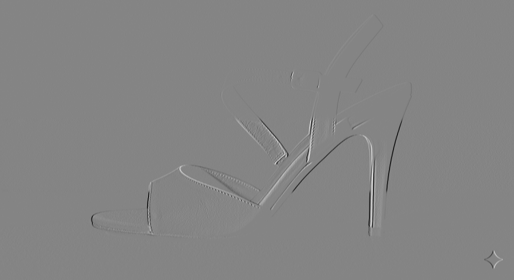 |
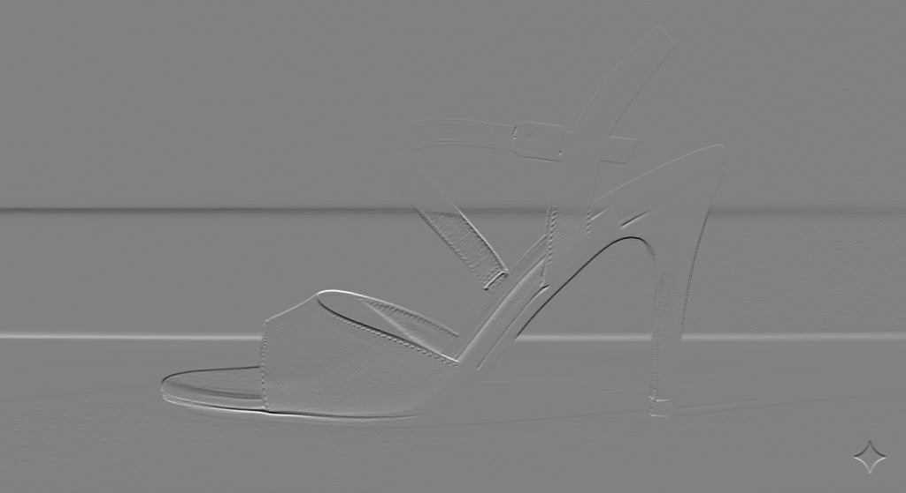 |
Figura 4: Detectores de borda aplicados à imagem original.
| Laplaciano | Sharpening | Emboss | Unsharp Mask |
|---|---|---|---|
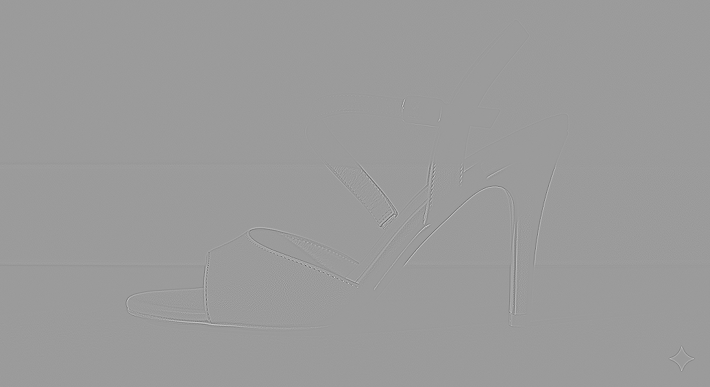 |
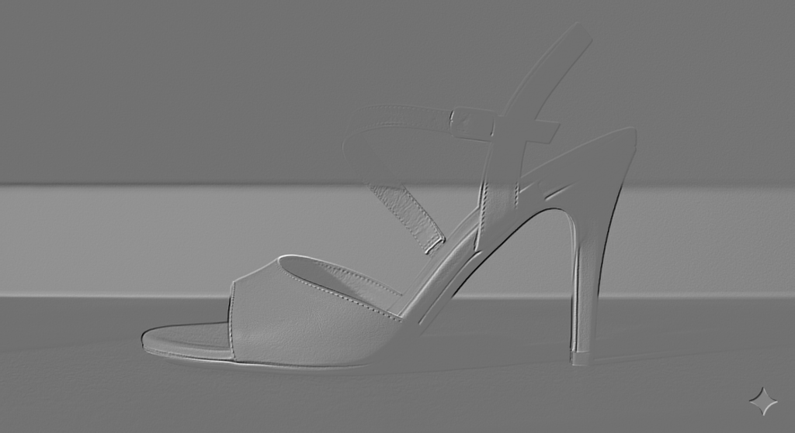 |
Figura 5: Filtros de realce aplicados à imagem original.
A implementação da Questão 2 está em questao2.py. O script lê a imagem em escala de cinza, aplica FFT 2D, centraliza o espectro com fftshift, cria máscaras circulares para filtros passa-baixa, passa-alta, passa-faixa e rejeita-faixa, multiplica essas máscaras ao espectro, reconstrói a imagem por IFFT, realiza compressão por limiar de magnitude e gera histogramas para comparação.
#!/usr/bin/env python3
"""
Questao 2 - Filtragem e compressao no dominio da frequencia (FFT)
Este script implementa, em um unico arquivo, o fluxo solicitado no enunciado:
1) abrir imagem em escala de cinza;
2) aplicar FFT 2D;
3) centralizar o espectro (componente de frequencia zero no centro);
4) criar mascaras para filtros passa-baixa, passa-alta, passa-faixa e rejeita-faixa;
5) filtrar no dominio da frequencia por multiplicacao espectro x mascara;
6) reconstruir imagem no dominio espacial por IFFT;
7) comprimir no dominio da frequencia removendo coeficientes de baixa magnitude;
8) apresentar histogramas antes e apos compressao.
Saidas principais (todas em atividade2/saidas/saidas_questao2, por padrao):
- 00_fft/............ espectro da imagem original (diagnostico da etapa FFT)
- 01_masks/.......... mascaras dos filtros (o que cada filtro preserva/atenua)
- 02_filtradas/...... imagens reconstruidas apos cada filtro
- 03_compressao/..... imagens reconstruidas apos compressao por limiar
- 04_histogramas/.... histogramas da imagem original e comprimidas
- resultados_questao2.json ... metadados, parametros e estatisticas resumidas
"""
from __future__ import annotations
import argparse
import json
import os
from dataclasses import dataclass
from typing import Dict, List, Tuple
import matplotlib.pyplot as plt
import numpy as np
from PIL import Image
DEFAULT_LOW_HIGH_RADII = [15, 30, 60]
DEFAULT_BAND_PAIRS = [(10, 30), (20, 50)]
DEFAULT_COMPRESS_PERCENTILES = [70, 85, 95]
@dataclass
class FilterResult:
name: str
parameter: str
output_image: str
output_spectrum: str
output_mask: str
stats: Dict[str, float]
def ensure_dir(path: str) -> None:
os.makedirs(path, exist_ok=True)
def find_default_input(script_dir: str) -> str:
candidates = [
os.path.join(script_dir, "image2.png"),
os.path.join(script_dir, "imagem2.png"),
os.path.join(script_dir, "image2.jpg"),
os.path.join(script_dir, "imagem2.jpg"),
]
for path in candidates:
if os.path.exists(path):
return path
raise FileNotFoundError(
"Imagem de entrada nao encontrada. Informe --input ou adicione image2.png/imagem2.png em atividade2/."
)
def load_image_gray_float(path: str) -> np.ndarray:
img = Image.open(path).convert("L")
return np.array(img, dtype=np.float32)
def save_uint8(arr_uint8: np.ndarray, path: str) -> None:
Image.fromarray(arr_uint8).save(path)
def minmax_to_uint8(arr: np.ndarray) -> np.ndarray:
arr = np.asarray(arr, dtype=np.float32)
min_v = float(arr.min())
max_v = float(arr.max())
if max_v <= min_v:
return np.zeros_like(arr, dtype=np.uint8)
norm = (arr - min_v) * (255.0 / (max_v - min_v))
return np.clip(norm, 0, 255).astype(np.uint8)
def parse_int_list(text: str) -> List[int]:
values: List[int] = []
for token in text.split(","):
token = token.strip()
if not token:
continue
values.append(int(token))
if not values:
raise ValueError("Lista de inteiros vazia")
return values
def parse_band_pairs(text: str) -> List[Tuple[int, int]]:
pairs: List[Tuple[int, int]] = []
for block in text.split(","):
block = block.strip()
if not block:
continue
parts = block.split("-")
if len(parts) != 2:
raise ValueError(f"Par invalido: {block}. Use formato r1-r2.")
r1 = int(parts[0].strip())
r2 = int(parts[1].strip())
if r1 >= r2:
raise ValueError(f"Par invalido: {block}. Necessario r1 < r2.")
pairs.append((r1, r2))
if not pairs:
raise ValueError("Lista de pares de faixa vazia")
return pairs
def frequency_distance_grid(shape: Tuple[int, int]) -> np.ndarray:
rows, cols = shape
crow, ccol = rows // 2, cols // 2
u = np.arange(rows)
v = np.arange(cols)
U, V = np.meshgrid(u, v, indexing="ij")
D = np.sqrt((U - crow) ** 2 + (V - ccol) ** 2)
return D
def make_lowpass_mask(D: np.ndarray, radius: int) -> np.ndarray:
return (D <= radius).astype(np.float32)
def make_highpass_mask(D: np.ndarray, radius: int) -> np.ndarray:
return (D > radius).astype(np.float32)
def make_bandpass_mask(D: np.ndarray, r1: int, r2: int) -> np.ndarray:
return ((D >= r1) & (D <= r2)).astype(np.float32)
def make_bandreject_mask(D: np.ndarray, r1: int, r2: int) -> np.ndarray:
return (1.0 - make_bandpass_mask(D, r1, r2)).astype(np.float32)
def spectrum_log_uint8(F_shift: np.ndarray) -> np.ndarray:
mag = np.abs(F_shift)
log_mag = np.log1p(mag)
return minmax_to_uint8(log_mag)
def apply_frequency_filter(F_shift: np.ndarray, mask: np.ndarray) -> Tuple[np.ndarray, np.ndarray]:
G_shift = F_shift * mask
g_ishift = np.fft.ifftshift(G_shift)
g_back = np.fft.ifft2(g_ishift)
g_real = np.real(g_back)
img_u8 = minmax_to_uint8(g_real)
spec_u8 = spectrum_log_uint8(G_shift)
return img_u8, spec_u8
def image_stats(img_u8: np.ndarray) -> Dict[str, float]:
return {
"min": int(img_u8.min()),
"max": int(img_u8.max()),
"media": float(np.mean(img_u8)),
"desvio_padrao": float(np.std(img_u8)),
"shape": [int(img_u8.shape[0]), int(img_u8.shape[1])],
}
def save_histogram(img_u8: np.ndarray, out_path: str, title: str) -> None:
plt.figure(figsize=(8, 4.2))
plt.hist(img_u8.ravel(), bins=256, range=(0, 255), color="#2368B5", alpha=0.9)
plt.title(title)
plt.xlabel("Intensidade")
plt.ylabel("Frequencia")
plt.tight_layout()
plt.savefig(out_path, dpi=150)
plt.close()
def save_histogram_comparison(original: np.ndarray, compressed: Dict[str, np.ndarray], out_path: str) -> None:
plt.figure(figsize=(9.5, 5))
hist_o, bins = np.histogram(original.ravel(), bins=256, range=(0, 255))
centers = (bins[:-1] + bins[1:]) / 2.0
plt.plot(centers, hist_o, label="Original", linewidth=2)
for label, img in compressed.items():
hist_c, _ = np.histogram(img.ravel(), bins=256, range=(0, 255))
plt.plot(centers, hist_c, label=f"Comprimida {label}", linewidth=1.3)
plt.title("Comparacao de histogramas: antes vs apos compressao")
plt.xlabel("Intensidade")
plt.ylabel("Frequencia")
plt.legend()
plt.tight_layout()
plt.savefig(out_path, dpi=150)
plt.close()
def compress_by_magnitude_threshold(F_shift: np.ndarray, percentile: int) -> Tuple[np.ndarray, Dict[str, float]]:
magnitude = np.abs(F_shift)
thr = float(np.percentile(magnitude, percentile))
keep_mask = magnitude >= thr
F_comp_shift = F_shift * keep_mask
g_ishift = np.fft.ifftshift(F_comp_shift)
g_back = np.fft.ifft2(g_ishift)
g_real = np.real(g_back)
img_u8 = minmax_to_uint8(g_real)
total = int(keep_mask.size)
kept = int(np.count_nonzero(keep_mask))
zeroed = total - kept
stats = {
"percentil": int(percentile),
"limiar_magnitude": thr,
"coeficientes_totais": total,
"coeficientes_mantidos": kept,
"coeficientes_zerados": zeroed,
"taxa_zerados": float(zeroed / total),
}
return img_u8, stats
def main() -> None:
parser = argparse.ArgumentParser(description="Questao 2 - FFT, filtros e compressao")
parser.add_argument("--input", "-i", default=None, help="Imagem de entrada (grayscale ou colorida)")
parser.add_argument("--outdir", "-o", default=None, help="Pasta de saida")
parser.add_argument("--low-high-radii", default=",".join(str(v) for v in DEFAULT_LOW_HIGH_RADII), help="Raios para filtros passa-baixa/passa-alta. Ex.: 15,30,60")
parser.add_argument("--band-pairs", default=",".join(f"{a}-{b}" for a, b in DEFAULT_BAND_PAIRS), help="Pares r1-r2 para passa-faixa/rejeita-faixa. Ex.: 10-30,20-50")
parser.add_argument("--compress-thresholds", default=",".join(str(v) for v in DEFAULT_COMPRESS_PERCENTILES), help="Percentis para compressao por magnitude. Ex.: 70,85,95")
args = parser.parse_args()
script_dir = os.path.dirname(__file__)
input_path = args.input if args.input else find_default_input(script_dir)
outdir = args.outdir if args.outdir else os.path.join(script_dir, "saidas", "saidas_questao2")
radii = parse_int_list(args.low_high_radii)
band_pairs = parse_band_pairs(args.band_pairs)
compress_percentiles = parse_int_list(args.compress_thresholds)
out_fft = os.path.join(outdir, "00_fft")
out_masks = os.path.join(outdir, "01_masks")
out_filtered = os.path.join(outdir, "02_filtradas")
out_compress = os.path.join(outdir, "03_compressao")
out_hist = os.path.join(outdir, "04_histogramas")
for p in [outdir, out_fft, out_masks, out_filtered, out_compress, out_hist]:
ensure_dir(p)
img = load_image_gray_float(input_path)
img_u8 = np.clip(img, 0, 255).astype(np.uint8)
F = np.fft.fft2(img)
F_shift = np.fft.fftshift(F)
spec_orig_u8 = spectrum_log_uint8(F_shift)
spec_orig_path = os.path.join(out_fft, "fft_espectro_centralizado.png")
save_uint8(spec_orig_u8, spec_orig_path)
D = frequency_distance_grid(img.shape)
results_filters: List[FilterResult] = []
for r in radii:
lp_mask = make_lowpass_mask(D, r)
lp_mask_path = os.path.join(out_masks, f"mask_passabaixa_r{r}.png")
save_uint8((lp_mask * 255).astype(np.uint8), lp_mask_path)
lp_img_u8, lp_spec_u8 = apply_frequency_filter(F_shift, lp_mask)
lp_img_path = os.path.join(out_filtered, f"filtro_passabaixa_r{r}.png")
lp_spec_path = os.path.join(out_filtered, f"espectro_passabaixa_r{r}.png")
save_uint8(lp_img_u8, lp_img_path)
save_uint8(lp_spec_u8, lp_spec_path)
results_filters.append(FilterResult("passa-baixa", f"r={r}", lp_img_path, lp_spec_path, lp_mask_path, image_stats(lp_img_u8)))
hp_mask = make_highpass_mask(D, r)
hp_mask_path = os.path.join(out_masks, f"mask_passaalta_r{r}.png")
save_uint8((hp_mask * 255).astype(np.uint8), hp_mask_path)
hp_img_u8, hp_spec_u8 = apply_frequency_filter(F_shift, hp_mask)
hp_img_path = os.path.join(out_filtered, f"filtro_passaalta_r{r}.png")
hp_spec_path = os.path.join(out_filtered, f"espectro_passaalta_r{r}.png")
save_uint8(hp_img_u8, hp_img_path)
save_uint8(hp_spec_u8, hp_spec_path)
results_filters.append(FilterResult("passa-alta", f"r={r}", hp_img_path, hp_spec_path, hp_mask_path, image_stats(hp_img_u8)))
for r1, r2 in band_pairs:
bp_mask = make_bandpass_mask(D, r1, r2)
bp_mask_path = os.path.join(out_masks, f"mask_passafaixa_r{r1}_{r2}.png")
save_uint8((bp_mask * 255).astype(np.uint8), bp_mask_path)
bp_img_u8, bp_spec_u8 = apply_frequency_filter(F_shift, bp_mask)
bp_img_path = os.path.join(out_filtered, f"filtro_passafaixa_r{r1}_{r2}.png")
bp_spec_path = os.path.join(out_filtered, f"espectro_passafaixa_r{r1}_{r2}.png")
save_uint8(bp_img_u8, bp_img_path)
save_uint8(bp_spec_u8, bp_spec_path)
results_filters.append(FilterResult("passa-faixa", f"r1={r1},r2={r2}", bp_img_path, bp_spec_path, bp_mask_path, image_stats(bp_img_u8)))
br_mask = make_bandreject_mask(D, r1, r2)
br_mask_path = os.path.join(out_masks, f"mask_rejeitafaixa_r{r1}_{r2}.png")
save_uint8((br_mask * 255).astype(np.uint8), br_mask_path)
br_img_u8, br_spec_u8 = apply_frequency_filter(F_shift, br_mask)
br_img_path = os.path.join(out_filtered, f"filtro_rejeitafaixa_r{r1}_{r2}.png")
br_spec_path = os.path.join(out_filtered, f"espectro_rejeitafaixa_r{r1}_{r2}.png")
save_uint8(br_img_u8, br_img_path)
save_uint8(br_spec_u8, br_spec_path)
results_filters.append(FilterResult("rejeita-faixa", f"r1={r1},r2={r2}", br_img_path, br_spec_path, br_mask_path, image_stats(br_img_u8)))
compressed_images: Dict[str, np.ndarray] = {}
compress_entries = []
for pctl in compress_percentiles:
comp_img_u8, comp_stats = compress_by_magnitude_threshold(F_shift, pctl)
key = f"p{pctl}"
comp_img_path = os.path.join(out_compress, f"compressao_percentil_{pctl}.png")
save_uint8(comp_img_u8, comp_img_path)
compressed_images[key] = comp_img_u8
compress_entries.append({"label": key, "arquivo": comp_img_path, "compressao": comp_stats, "imagem": image_stats(comp_img_u8)})
hist_original_path = os.path.join(out_hist, "histograma_original.png")
save_histogram(img_u8, hist_original_path, "Histograma - Imagem Original")
hist_compressed_paths = {}
for key, comp_img in compressed_images.items():
path = os.path.join(out_hist, f"histograma_{key}.png")
save_histogram(comp_img, path, f"Histograma - Imagem Comprimida ({key})")
hist_compressed_paths[key] = path
hist_compare_path = os.path.join(out_hist, "comparativo_histogramas_original_vs_comprimidas.png")
save_histogram_comparison(img_u8, compressed_images, hist_compare_path)
payload = {
"input": os.path.abspath(input_path),
"outdir": os.path.abspath(outdir),
"parametros": {
"low_high_radii": radii,
"band_pairs": band_pairs,
"compress_threshold_percentiles": compress_percentiles,
},
"fft": {"espectro_centralizado": spec_orig_path},
"filtros": [
{
"tipo": r.name,
"parametro": r.parameter,
"mascara": r.output_mask,
"espectro_filtrado": r.output_spectrum,
"imagem_filtrada": r.output_image,
"estatisticas": r.stats,
}
for r in results_filters
],
"compressao": compress_entries,
"histogramas": {
"original": hist_original_path,
"comprimidas": hist_compressed_paths,
"comparativo": hist_compare_path,
},
}
json_path = os.path.join(outdir, "resultados_questao2.json")
with open(json_path, "w", encoding="utf-8") as f:
json.dump(payload, f, indent=2, ensure_ascii=False)
print("Questao 2 concluida com sucesso.")
print(f"Entrada: {os.path.abspath(input_path)}")
print(f"Saidas em: {os.path.abspath(outdir)}")
print(f"Relatorio JSON: {json_path}")
if __name__ == "__main__":
main()
Os resultados são organizados em subpastas, cada uma com finalidade específica:
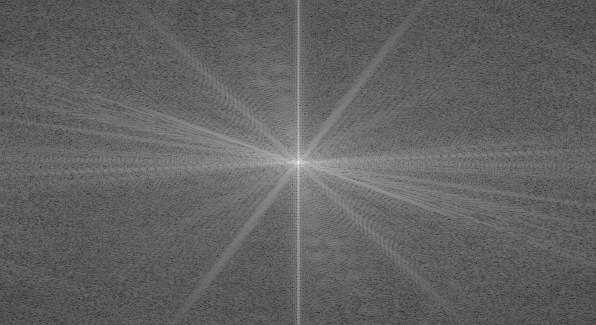
Figura 6: Espectro de frequência da imagem original após aplicação da FFT e centralização.
| Passa-Baixa r=15 | Passa-Baixa r=30 | Passa-Baixa r=60 |
|---|---|---|
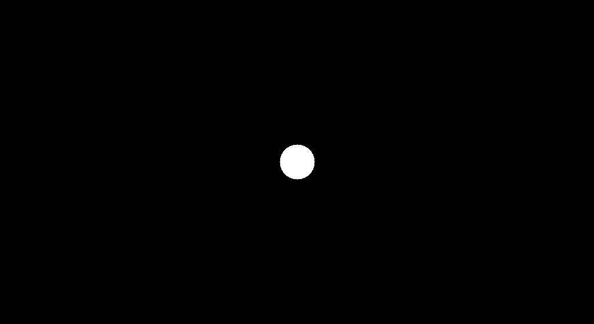 |
| Passa-Alta r=15 | Passa-Alta r=30 | Passa-Alta r=60 |
|---|---|---|
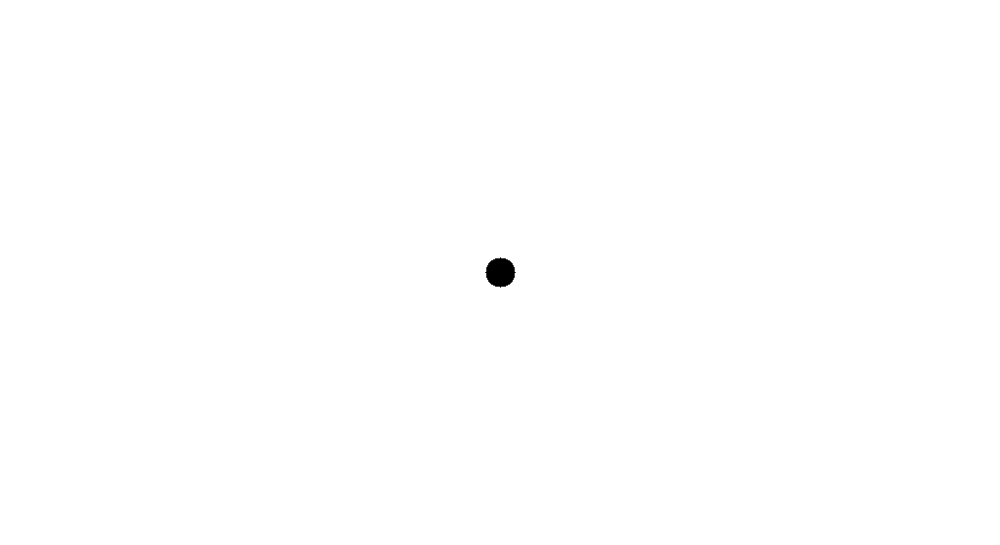 |
| Passa-Faixa 10-30 | Passa-Faixa 20-50 | Rejeita-Faixa 10-30 | Rejeita-Faixa 20-50 |
|---|---|---|---|
Figura 7: Máscaras de filtro utilizadas no domínio da frequência.
| Passa-Baixa r=15 | Passa-Baixa r=30 | Passa-Baixa r=60 |
|---|---|---|
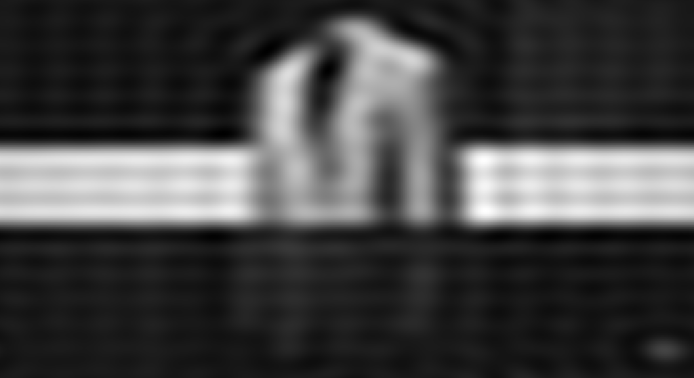 |
| Passa-Alta r=15 | Passa-Alta r=30 | Passa-Alta r=60 |
|---|---|---|
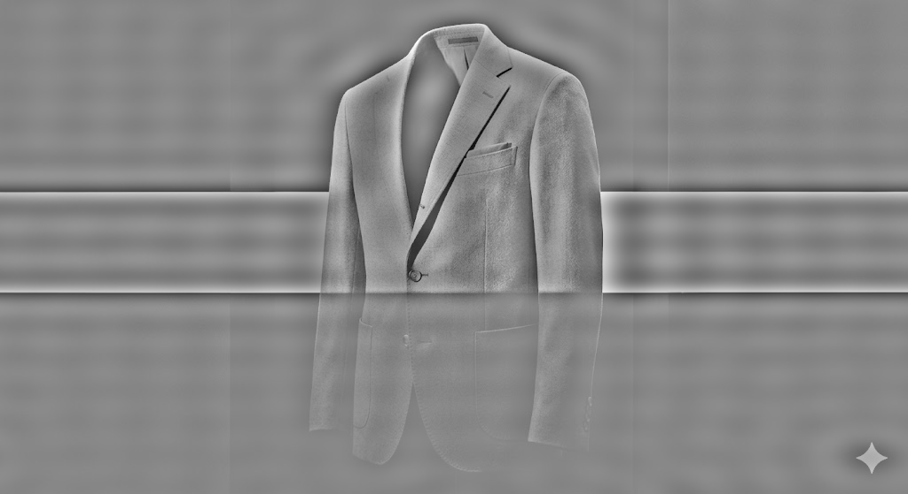 |
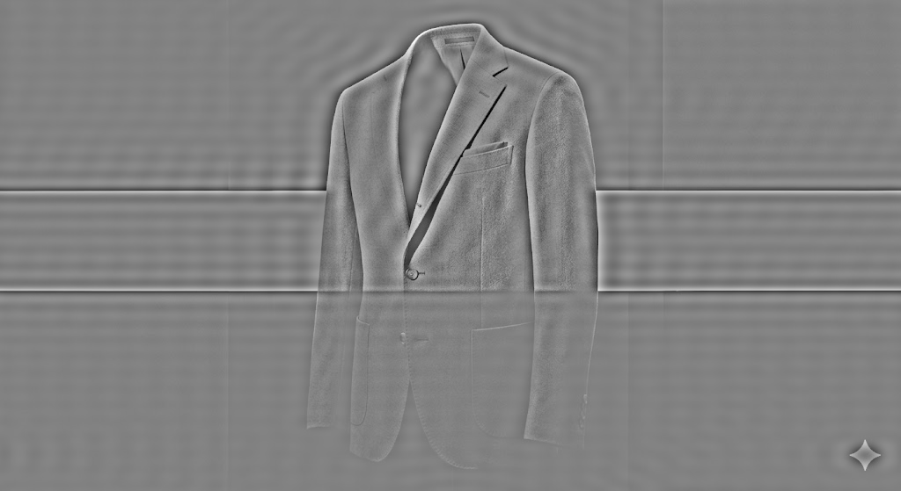 |
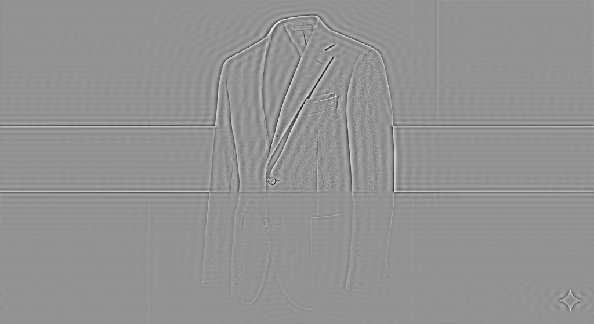 |
| Passa-Faixa 10-30 | Passa-Faixa 20-50 | Rejeita-Faixa 10-30 | Rejeita-Faixa 20-50 |
|---|---|---|---|
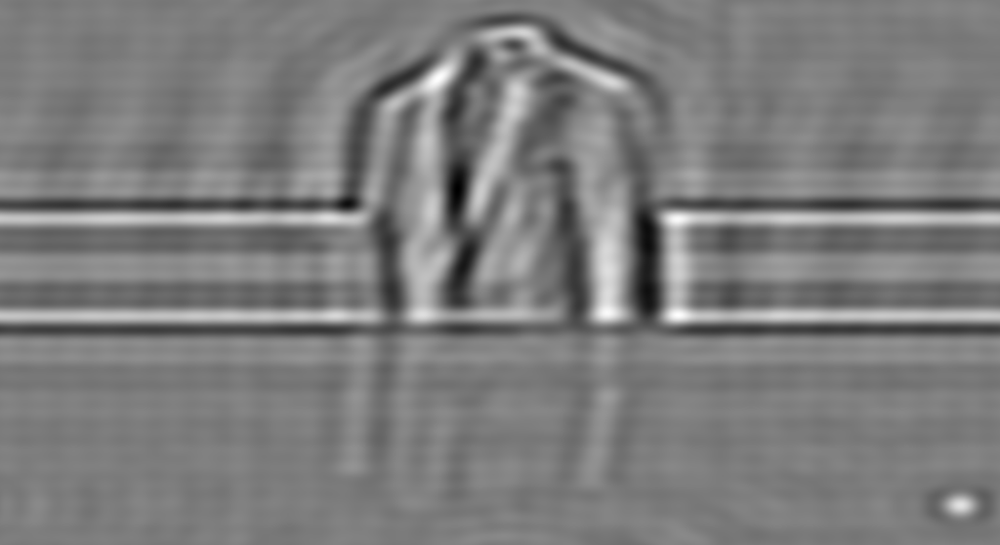 |
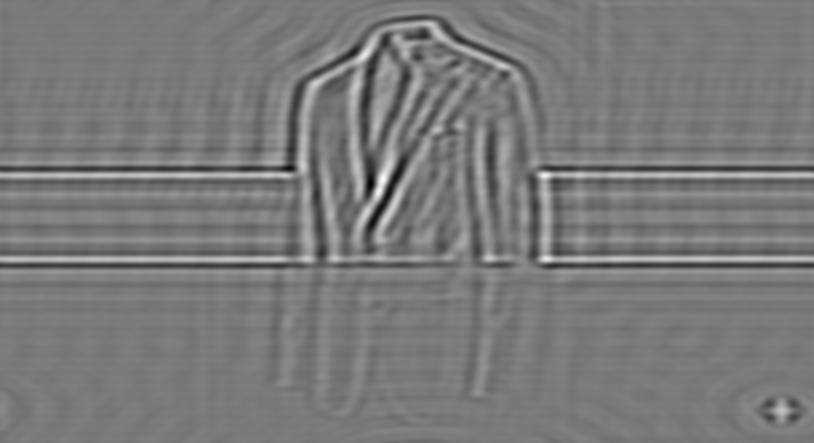 |
Figura 8: Imagens filtradas no domínio da frequência.
| Compressão P70 | Compressão P85 | Compressão P95 |
|---|---|---|
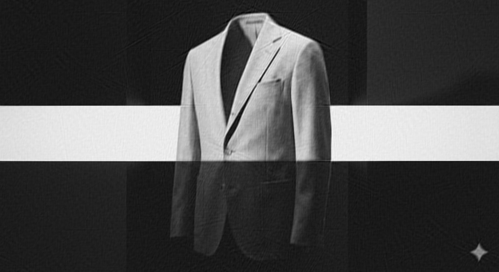 |
Figura 9: Imagens comprimidas por limiar de magnitude no domínio da frequência.
A análise por histogramas permite avaliar o impacto da compressão na distribuição de intensidades da imagem. A seguir são apresentados os histogramas da imagem original e das versões comprimidas com diferentes percentis de limiar de magnitude.
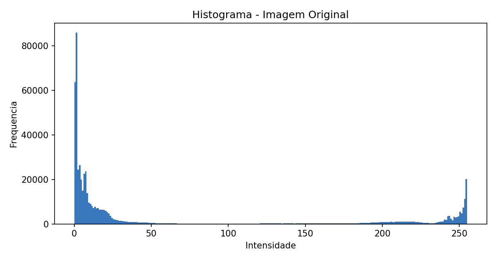
Figura 10: Histograma da imagem original, mostrando a distribuição de intensidades sem compressão.
O histograma original representa a distribuição de intensidades da imagem antes de qualquer processamento de compressão. Esta distribuição serve como referência para comparar os efeitos da compressão por limiar de magnitude.
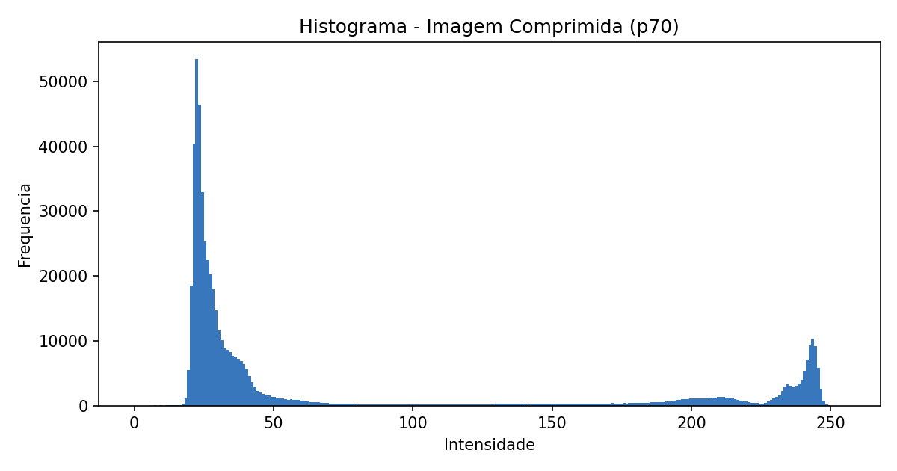
Figura 11: Histograma da imagem comprimida com percentil 70.
A compressão com percentil 70 remove 30% dos coeficientes de menor magnitude no domínio da frequência. O histograma resultante mostra uma distribuição de intensidades que mantém boa similaridade com o original, indicando que a qualidade visual é preservada mesmo com esta compressão moderada.
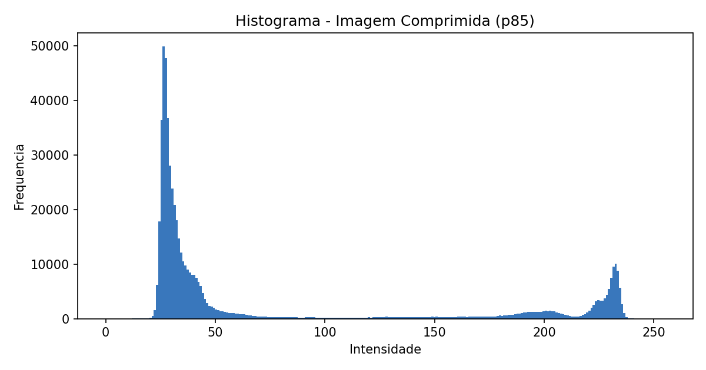
Figura 12: Histograma da imagem comprimida com percentil 85.
Com o percentil 85, 15% dos coeficientes são removidos. O histograma começa a mostrar alterações mais perceptíveis na distribuição de intensidades, refletindo o aumento da perda de informação espectral. Ainda assim, a estrutura geral da imagem permanece reconhecível.
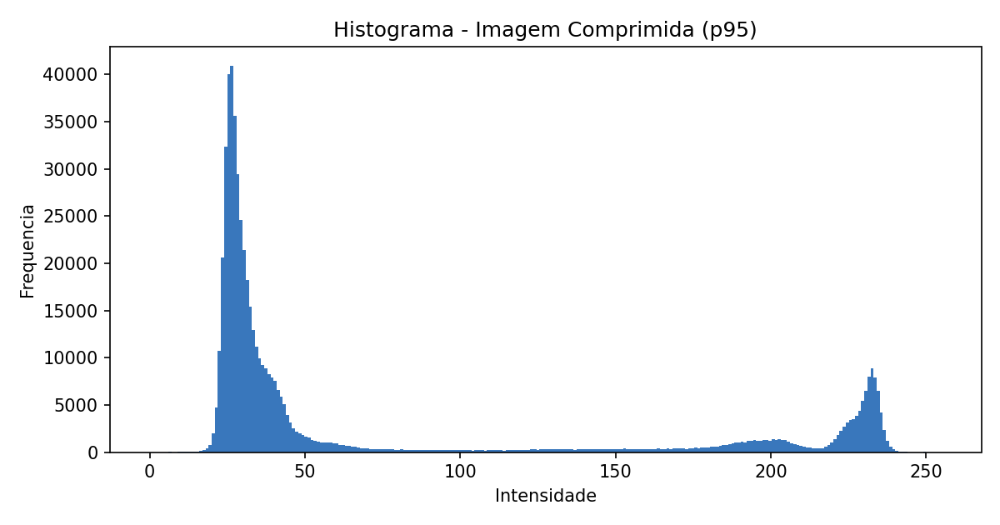
Figura 13: Histograma da imagem comprimida com percentil 95.
A compressão com percentil 95 é mais agressiva, removendo apenas 5% dos coeficientes de maior magnitude. O histograma resultante mostra uma distribuição significativamente alterada em relação ao original, indicando maior perda de detalhes e degradação da qualidade visual.
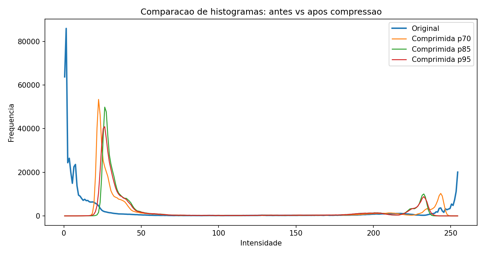
Figura 14: Comparativo de histogramas entre imagem original e versões comprimidas.
O gráfico comparativo permite visualizar simultaneamente a evolução da distribuição de intensidades conforme aumenta o nível de compressão. É possível observar que:
Esta análise demonstra o trade-off entre taxa de compressão e qualidade visual: quanto maior o percentil de limiar, maior a compressão, mas também maior a perda de fidelidade à imagem original.
atividade2/saidas/saidas_questao2/00_fft/fft_espectro_centralizado.pngatividade2/saidas/saidas_questao2/01_masks/atividade2/saidas/saidas_questao2/02_filtradas/atividade2/saidas/saidas_questao2/03_compressao/atividade2/saidas/saidas_questao2/04_histogramas/Os filtros passa-baixa tendem a suavizar a imagem, enquanto os passa-alta evidenciam contornos e detalhes finos. Os passa-faixa e rejeita-faixa servem para analisar intervalos específicos de frequência. Na compressão, percentis mais altos removem mais coeficientes e aumentam a perda visual, porém com menor custo de armazenamento.
A comparação entre as saídas da Questão 1 e da Questão 2 revela a diferença entre manipulação direta de pixels e manipulação espectral. No domínio espacial, o efeito de cada kernel é imediatamente perceptível na aparência final da imagem. No domínio da frequência, a máscara aplicada determina com precisão quais componentes serão mantidos ou removidos, produzindo efeitos mais controlados e teoricamente mais interpretáveis.
As imagens de suavização na Questão 1 e as saídas passa-baixa na Questão 2 compartilham a mesma tendência geral de redução de detalhes. Já os detectores de borda da Questão 1 se relacionam conceitualmente com os filtros passa-alta da Questão 2, pois ambos enfatizam componentes de alta frequência. A compressão por percentil mostra que é possível reduzir significativamente a informação espectral mantendo qualidade visual razoável, sobretudo quando o limiar é menos agressivo.
A atividade cumpriu o propósito de exercitar transformações nos domínios espacial e da frequência com implementação manual e controle explícito sobre cada etapa. A Questão 1 reforça a lógica da convolução e o papel dos kernels na extração de características. A Questão 2 evidencia como a FFT facilita o desenho de filtros e permite compressão eficiente baseada em magnitude espectral. Em conjunto, as implementações demonstram a relação entre teoria matemática e resultado visual no processamento de imagens.
python atividade2/q1.py --input atividade2/imageq1.png --outdir atividade2/saidas/saidas_questao2
python atividade2/questao2.py --input atividade2/image2.png --outdir atividade2/saidas/saidas_questao2
atividade2/saidas/saidas_questao2/resultados_q1.jsonatividade2/saidas/saidas_questao2/resultados_questao2.json